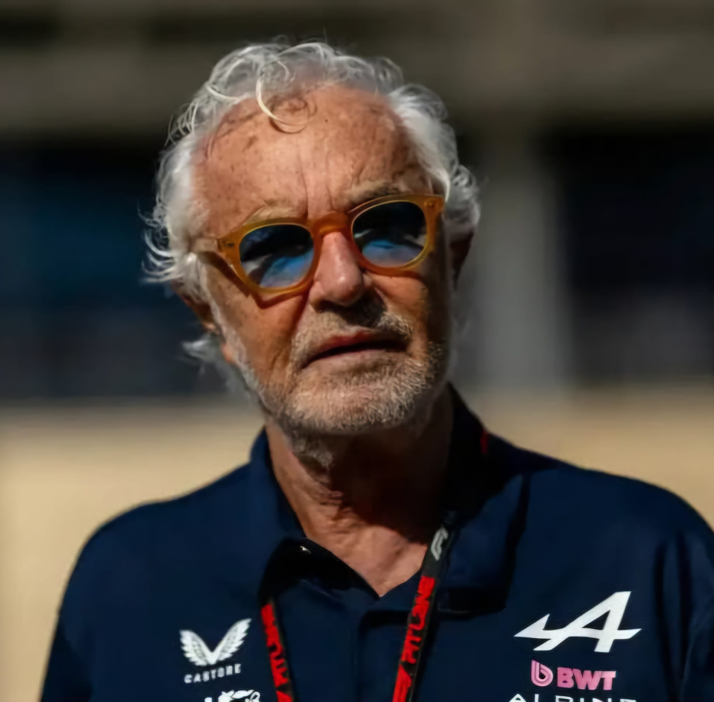

Flavio Briatore
Flavio Briatore
Team: Alpine
Nationality: Italy
Born: 1950
In charge since: 2024
History: Flavio Briatore is an Italian businessman and Formula 1 executive currently involved in the leadership of the Alpine F1 Team project. He is widely known for his charismatic personality, aggressive management style, and ability to build competitive teams in Formula 1.
Briatore first became prominent in F1 during the 1990s as team principal of Benetton Formula. Under his leadership, Benetton won the Drivers’ Championships in 1994 and 1995, as well as the Constructors’ Championship in 1995.
He later led the Renault F1 Team, achieving further success with Fernando Alonso, who won world titles in 2005 and 2006. Briatore became known for identifying young talent and creating highly competitive racing structures.
He eventually returned to Formula 1 and rejoined Alpine to help restructure and strengthen the team’s long-term project. Today, he is considered one of the most influential and experienced figures in modern Formula 1 management.
